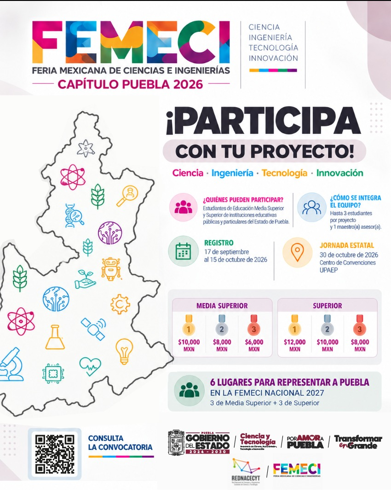

Plataforma Estatal para el Talento Científico Juvenil
La **Feria Mexicana de Ciencias e Ingenierías (FEMECI) Puebla 2026** es la máxima cumbre estatal de divulgación, evaluación e impulso al desarrollo científico y humanista en Puebla. Coordinada por la Secretaría de Ciencia, Humanidades, Tecnología e Información (SECIHTI) y la Dirección de Modernización Educativa, reúne las propuestas más destacadas en ocho áreas del conocimiento.
Los proyectos ganadores obtuvieron su acreditación oficial para representar al Estado de Puebla en la fase nacional de la FEMECI a celebrarse en marzo de 2027 en la ciudad de San Luis Potosí.
📂 Documentos Oficiales y Resultados (Descarga Directa)
Todos los archivos PDF se descargan de forma inmediata y directa desde la plataforma oficial:
📱 Publicaciones en Redes Sociales (Facebook)
Reportes de difusión oficial y cobertura del evento en redes institucionales:
Difusión de la inauguración y exhibición de proyectos en el Centro de Vinculación UPAEP.
Reporte noticioso sobre el fomento a vocaciones científicas y apoyo de la SECIHTI.
🌐 Cobertura en Prensa Digital y Medios Informativos
Artículos de prensa y portales universitarios que han documentado el certamen estatal:
Crónica oficial del Gobierno del Estado sobre la participación estudiantil y vinculación con la SECIHTI.
Reseña sobre la ceremonia de apertura y mensaje a las 25 instituciones educativas de la entidad.
Detalle sobre las 8 áreas del conocimiento evaluadas por comités de pares académicos.
Análisis del certamen como plataforma para proponer soluciones a problemáticas sociales de Puebla.
Cobertura especial sobre los conversatorios temáticos de inteligencia artificial, ética y aprendizaje.
Perspectiva de la sede anfitriona destacando el jurado evaluador multidisciplinario.
Reseña editorial sobre la importancia del certamen científico estatal coordinado por la SECIHTI.